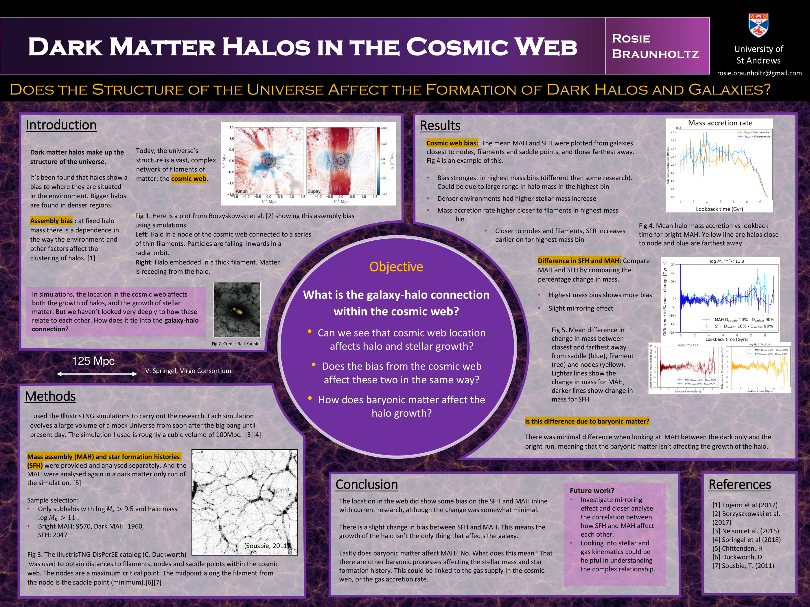
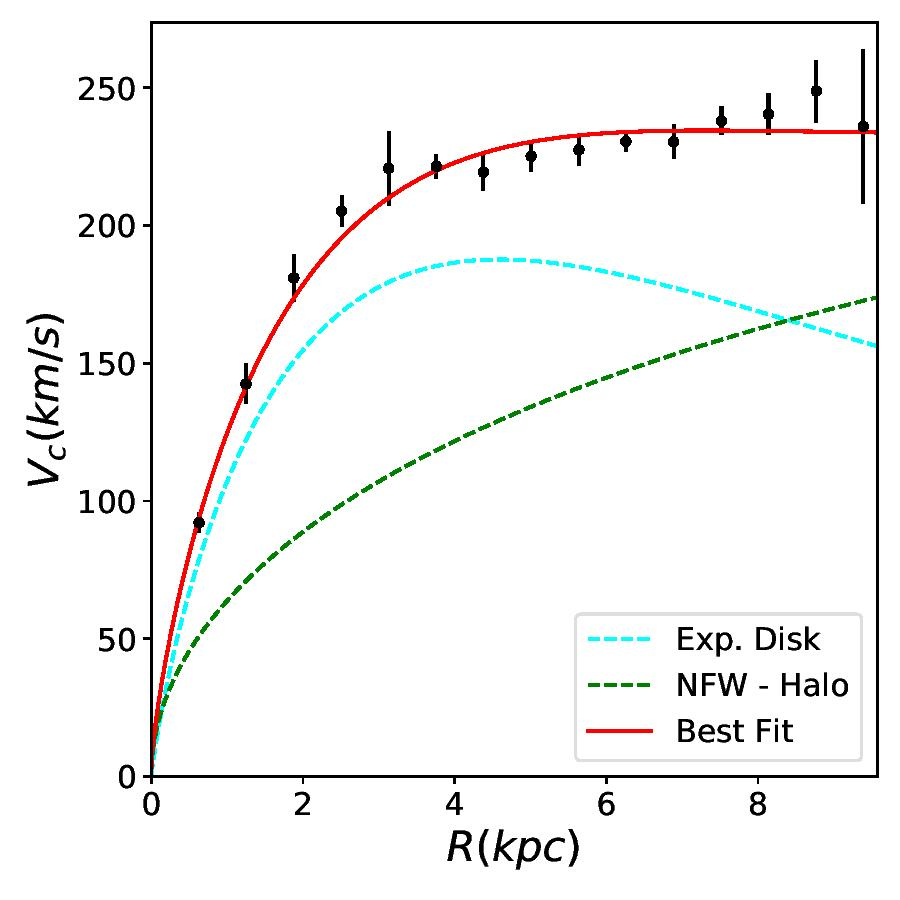

MSc Astrophysics
I used the Illustris-TNG simulation to study the effects of environment and location in the cosmic web on mass accretion history. I found that distances in the web did have some affect on star formation and mass accretion histories, and comparing them to other research I found similar results. I showcased my research Poster Symposium Targeting Early-career Researchers (PoSTER), which I have put below.
Abstract: This research converys the study on the growth of halos and galaxies in reference to their location in the Cosmic Web. I used data from the IllustrisTNG100-1 simulation to compare the Mass Accretion Histories (MAH) and Star Formation Histories (SFH) of galaxies for different regions: node, filament and saddle point. The MAH were then compared with the TNG100-1 Dark simulation to see the effect of baryons on the assembly history and to investigate further into the halo-galaxy connection. The results show that different regions in the cosmic web do affect the MAH and SFH, though minimally, and that there are slight changes between MAH and SFH at the same location. Suggesting that there are differences in SFH that do not affect the halo mass. Lastly, the dark and bright simulations when compared showed no change suggesting that baryons do not have any effect on MAH.
I used velocity fields from the MANGA survey to extract rotation curves and fit dark halo profiles to 12 disk galaxies.
Abstract: I present H-alpha rotation curves for a sample of 12 disk galaxies from the SDSS MaNGA survey. Rotation curves are obtained with DiskFit and are then fitted with potential models from the new python tool which implements galpy: GalRotpy. Bulge and DM fractions are found and compared with those from literature. There were no similarities nor any correlation between DM halo and stellar fraction found for these galaxies.
